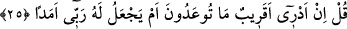

fîhâ/orada ebedî kalırlar” ifâdesi, hem de “ebeden/sonsuza kadar” ifâdesi
kullanılmıştır. Bu da âyette “uzun süre”nin değil “sonsuzluk”un kasdedildiğini tekidli
bir şekilde ortaya koymaktadır.
24. Sonunda, tehdid edilip durduklarını (azâbı, kıyâmeti) gördükleri zaman, kim
yardımcı olma bakımından daha güçsüz ve sayıca daha az imiş, bileceklerdir.
“Sonunda tehdid edilip durduklarını gördükleri zaman” Bu cümle kâfirlerin
Peygamber (s.a.)’in etrafında bulunan müslümanları ne zamana kadar zayıf
göreceklerini ve sayılarını ne zamana kadar az bulacaklarını ifâde eden bir cümledir.
Çünkü onlar müslümanları görünce: “Bunlar bize oranla kocaman bir dağdaki çakıl
mesâbesindeler” diyorlardı. İşte onların bu anlayışlarına karşılık, bu âyet-i kerîmede
şöyle denmiş oluyor: “Onlar bu inanışları ve anlayışları üzerlerine âhirette vaad
olundukları çeşit çeşit azâbı görünceye kadar devam ederler. Ama başlarına o azâb
gelip çattığı zaman “kim yardımcı olma bakımından daha güçsüz ve sayıca daha az
imiş bileceklerdir.” Yâni onlar kimin daha zayıf, kimin sayısının daha az olduğunu,
bunların müminler mi yoksa kendileri mi olacağını yakında bileceklerdir.
Bâzı âlimler “tehdid edilip durdukları” azâbın, Bedir günü kâfirlerin karşılaştığı azap
olduğunu söylemişlerdir. Her ne olursa olsun bu âyet-i kerîme gösteriyor ki kâfirler
dünyada ve âhirette -sayıları çok olsa bile, vücudça güçlü bile bulunsalar- yardımsız
kalacaklardır. Çünkü kâfirlerin dostu yoktur. Müminler ise her iki âlemde -sayıları az
bile olsa, vücudça zayıf bile bulunsalar- yine de yardıma mazhar olacaklardır. Çünkü
Allah Teâlâ onların yardımcısıdır. Bir tek kimse eğer hak üzere ise o kendi başına
büyük bir topluluktur. Çünkü onun yardımı Arş’tan iner de iner.
Hâfız şöyle demiştir:
Feleğin kendi feyziyle su verip keskin kıldığı kılıç
Ordunun yardımı olmadan dünyayı ele geçirir.
25. De ki: Tehdid edilegeldiğiniz (azap), yakın mıdır, yoksa Rabbim onun için uzun
bir süre mi koyar, ben bilmem.
Bu âyette yer alan ve “uzun süre” anlamına gelen “emed” kelimesi aslında yakın bir
süreye de söylenir. Ancak âyette “yakın” kelimesinin karşısında kullanıldığından
anlaşılıyor ki burada “uzun süre” anlamınadır. Arapça’da bu “emed” kelimesinin